Elearn App
One learning platform for students, teachers and admins
Elearn App is the platform designed for Jalasoft and Jala University's tech bootcamps. Students follow their courses, teachers own and publish the curriculum, and bootcamp coordinators set up cohorts and watch progress — all inside a single connected system.
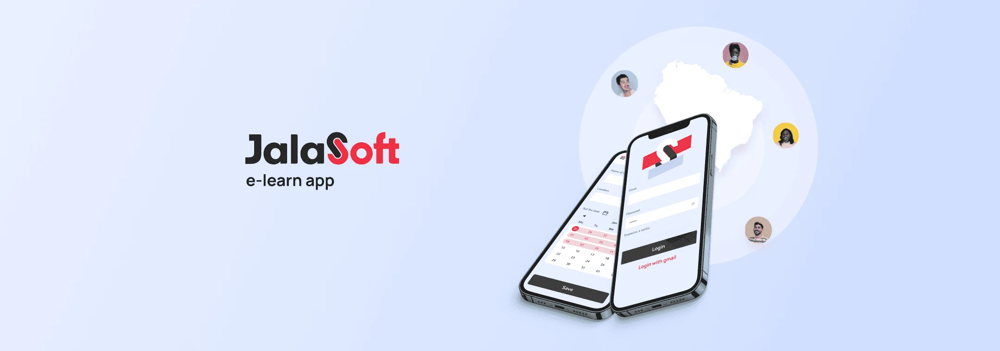
Three audiences, one product, built from scratch
Jalasoft and Jala University run tech bootcamps across Brazil and LATAM. Students, teachers and administrators each had their own way of getting things done, and none of it lived in a shared tool.
I ran the project solo: stakeholder interviews, synthesis, journeys, wireframes and every high-fidelity screen, built on the Jalasoft design system.
- Stakeholder Interviews
- Affinity Mapping
- Value Proposition Canvas
- Journey Mapping
- Wireframing
- UI Design
- See the design system ↗
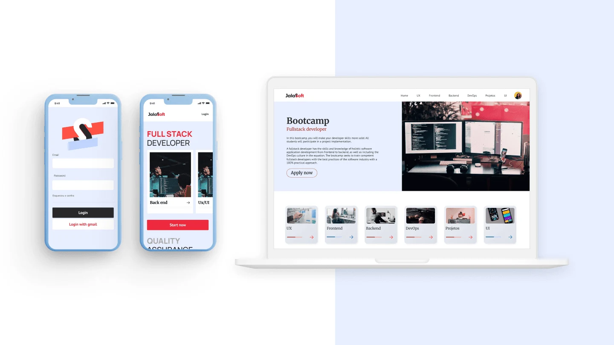
Responsive from the start — phone and desktop
Three problems that fed each other
The brief sounded simple. The research showed it was really three gaps, each one making the others worse.
Onboarding gaps
There was no standard way in for any of the three user groups. Everyone started differently.
Fragmented communication
Messages between students, teachers and admins travelled over ad hoc channels, so context was lost along the way.
Progress invisibility
Admins had no early signal for students falling behind, so help arrived after the problem had grown.
One tool, three needs
How do we give students, teachers and bootcamp coordinators each what they actually need, without building three disconnected tools?
From interviews to high fidelity
Four phases, run in parallel across the three groups so that no single perspective shaped the product on its own.
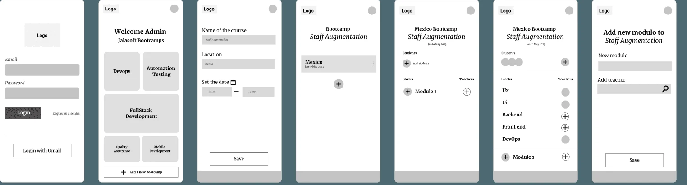
Low-fidelity wireframes — priority flows laid out in grey
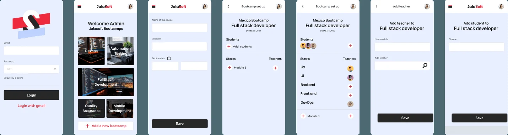
Mid-fidelity — the same flows with real structure and brand
Key choicesand why
Three decisions came straight out of the interviews and shaped the product more than any single screen.
Rebalancing practice and theory
Students and teachers both asked for more hands-on work. The UI coursework moved toward heavier practice, while UX kept its theoretical rigor, and the course pages make that balance visible.
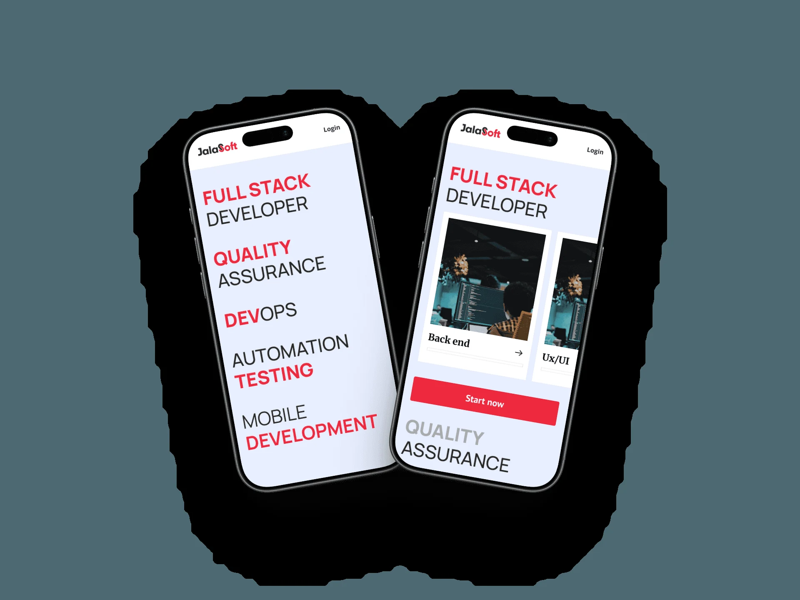
Teachers own the content
Instead of central authorship, teachers upload their own curriculum. The people who know the subject control it, and students get a class view with progress per person.
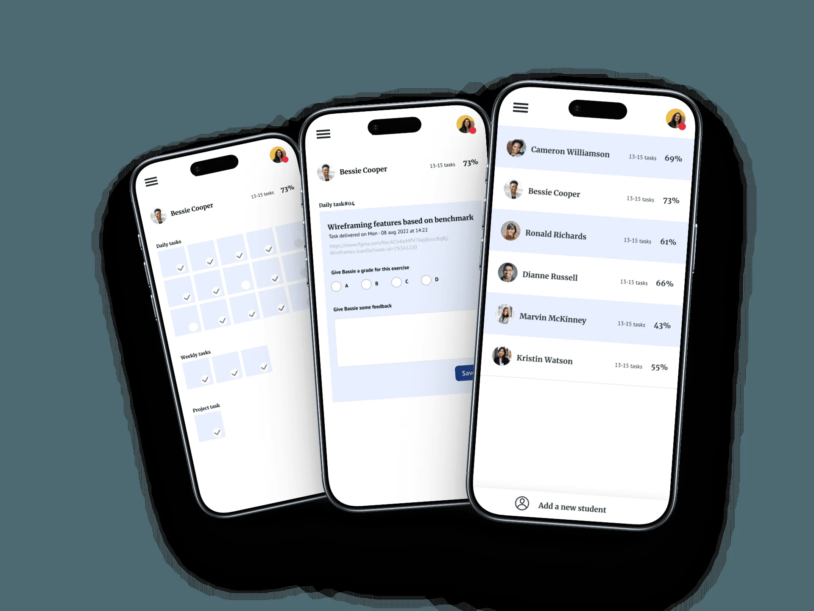
A staged setup flow
Creating a bootcamp runs in steps: course, then stacks, then assignments. Each step keeps the context of the one before, so admins never lose track of what they are configuring.
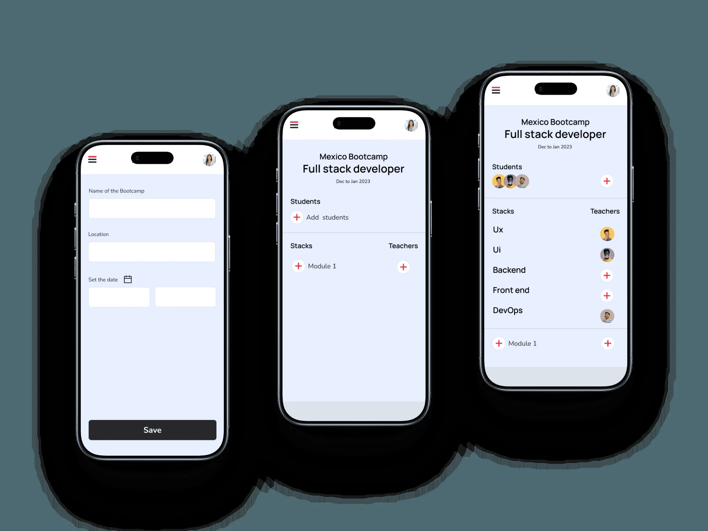
Built on the Jalasoft design system
Typography, color and components came from the system, so the product feels like part of the same company from the first screen.
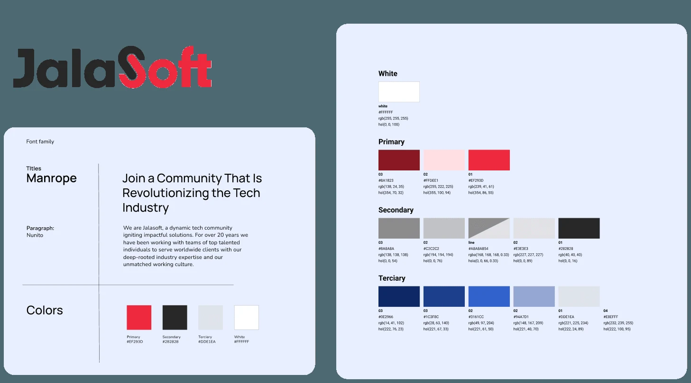
Foundations — Manrope and the Jalasoft color system
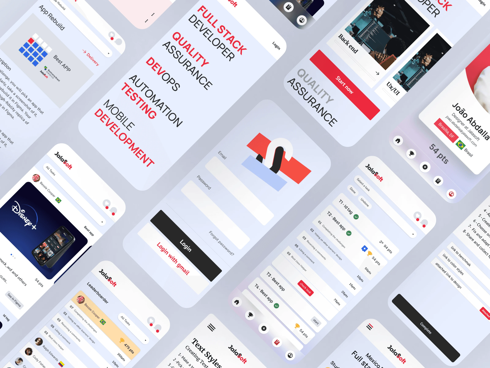
Dozens of screens across the three roles
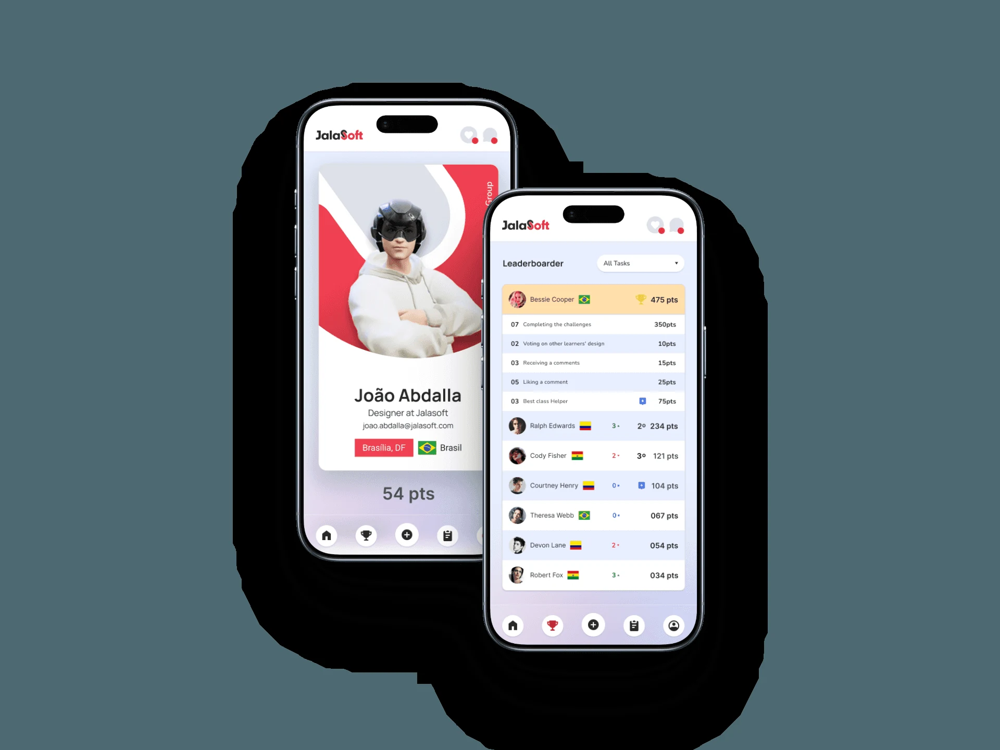
Student profile and leaderboard
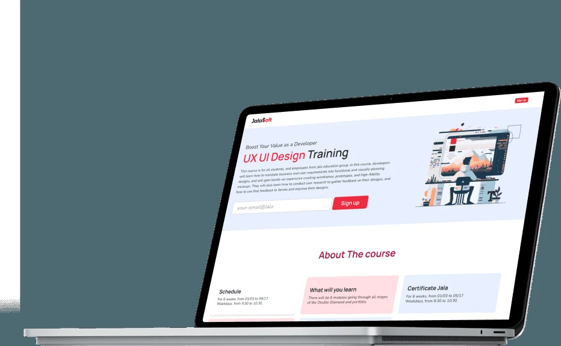
Course landing page — schedule, what you will learn, certificate
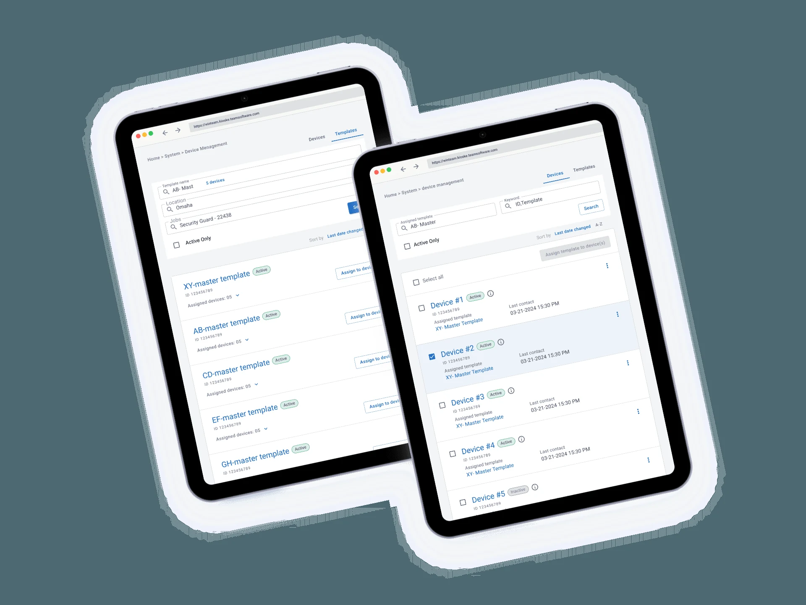
Admin on tablet — lists built for scanning
What Itook away
Parallel research
Interviewing all three groups at the same time exposed structural gaps that no single perspective would have caught.
Keep refining after discovery
Multi-stakeholder products benefit from iteration well beyond the first round of research. I'd plan more review cycles with each group.
Learning is its own design problem
Curriculum design asks for pedagogical thinking that goes beyond standard UX and UI patterns. Teaching the bootcamp myself made that concrete.
Taught to 100+ students across LATAM
The curriculum behind the app was taught across 9 bootcamp cohorts, reaching more than 100 students in Brazil and LATAM. The app itself was approved for the product roadmap and was in pre-development when I left the company.
The work led to two follow-up projects, the Blueprint design system and an internal employee training program, and I was recognized as a top-rated instructor.
See the design system →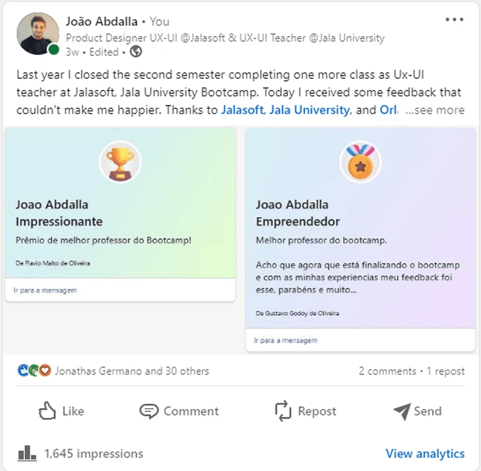